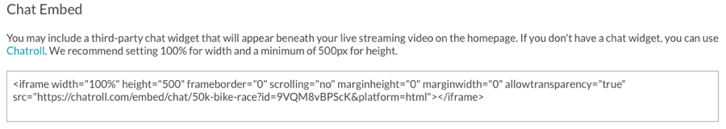

Creating the Live Event State for a Portal Event Experience
In this topic you will learn how to create the live event state for a Live Event Portal experience.
The Live Event Portal template provides pre-event, live event, post-event, video archive and video detail page templates. These page templates can be customized so the site has a different appearance before, during and after a live event. The live event state is what the site will display during the live event.
To create the live event home page state for a site, create a new portal experience using the Live Event Portal template. In the Gallery Site Editor, click PAGES in the left navigation and then click Homepage: Live.
The live event home page state provides the following content areas.
A - Home Logo and Name - Used to return viewer back to the home page. There are two placeholders here so you may choose to have an image followed by text for example.
B - Link to Video Archive - Used to view all video collections that have been created for the site.
C - Twitter Settings - Provides the ability to use a Twitter feed widget. See Configuring a Twitter feed.
D - Background image - Used to add a background image
E - Live Video Settings - Used to configure the live video ID. See Configuring live video.
F - Live Event Name - Static text message
G - "Happening Now" Indicator - Hide/show "Happening now" indicator
H - Chat Settings - Optional area to embed third-party chat widget (e.g., Chatroll) . See Configuring a chat widget.
The site can be configured with a Twitter embed on the page. For the types of embeds available, check the Twitter website. A sample likes timeline is shown below.
Copy the HTML for the Twitter widget and paste it into the Twitter Feed settings.
Click Save.
Configuring live video
Click on the Configure Live Video link to configure the live video settings with the Video ID or Reference ID of the live video asset. When using the video ID, the experience will have to be updated with the new video ID every time a new live event is created. Using a reference ID provides more flexibility. When a new live event is created, just assign the designated reference ID to the new video in the Media module and no changes are required to the experience.
Locating the Video ID
The video ID can be located using one of the following methods:
The video ID appears below the video title in the Media module.
The video ID appears below the event name inside the Live module.
Locating the Reference ID
The reference ID can be located using the Media module.
Configuring a chat widget
The site can be configured to display third-party chat widgets on a page. For example, using Chatroll, you can embed HTML code in a page to add online chat capabilities to a Gallery site. A sample chat is shown below.
To add a third-party chat widget, follow these steps:
Click on the Chat Settings link on the page.
Copy the HTML for the chat widget and paste it into the Chat Embed settings.

 Contact Support
Contact Support System Status
System Status